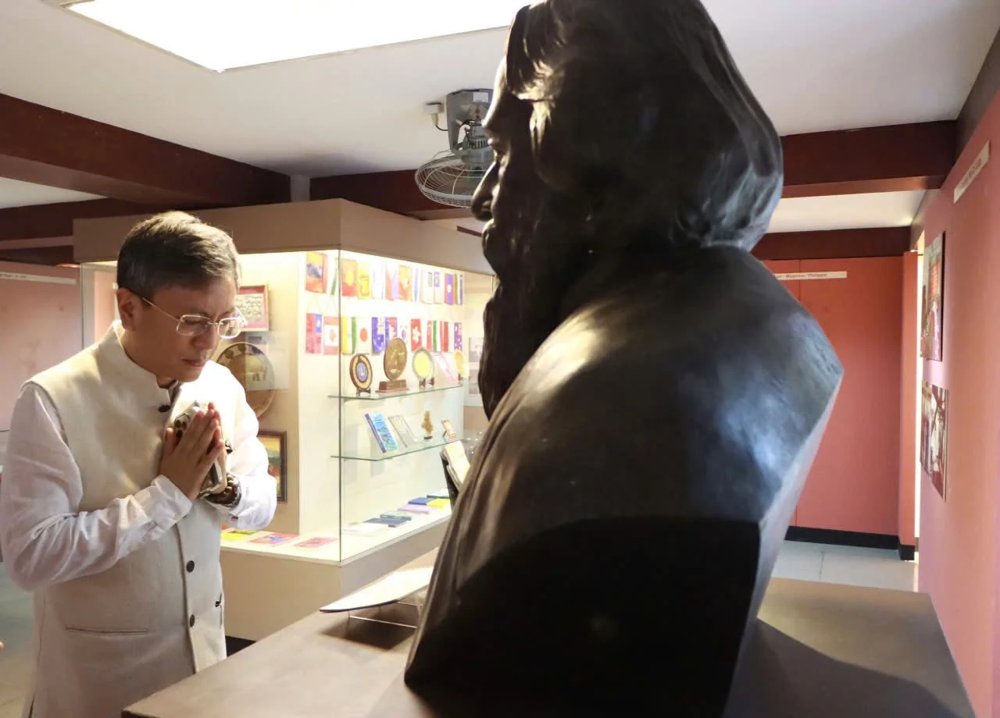

Chiều ngày 30/9/2026, Ngài TShering W. Sherpa, Đại sứ Đặc mệnh toàn quyền Cộng hòa Ấn Độ tại Việt Nam, đến thăm Bảo tàng Văn học Việt Nam. Chuyến thăm là dịp để Ngài Đại sứ tìm hiểu sâu hơn về lịch sử hình thành, diện mạo và những giá trị đặc sắc của nền văn học Việt Nam, từ đó mở ra những triển vọng kết nối, giao lưu văn hóa giữa hai quốc gia có truyền thống văn hóa lâu đời.
Trong không khí thân mật, Ngài Đại sứ TShering W. Sherpa đã tham quan các không gian trưng bày của Bảo tàng, lắng nghe giới thiệu về những dấu mốc quan trọng trong tiến trình phát triển của văn học Việt Nam qua các thời kỳ. Từ văn học cổ – trung đại đến văn học hiện đại, hệ thống trưng bày tại Bảo tàng không chỉ giới thiệu các tác giả, tác phẩm tiêu biểu mà còn góp phần khắc họa những giá trị tư tưởng, tinh thần và bản sắc văn hóa Việt Nam được kết tinh qua nhiều thế hệ.

Điểm nhấn trong chuyến tham quan là tượng nhà thơ Rabindranath Tagore, tác gia lớn của văn học Ấn Độ và là một trong những gương mặt văn hóa có ảnh hưởng sâu rộng trên thế giới. Bức tượng do Đại sứ quán Ấn Độ trao tặng Hội Nhà văn Việt Nam và được đặt tại Bảo tàng nhân dịp kỷ niệm 150 năm năm sinh của Rabindranath Tagore. Sự hiện diện của tượng nhà thơ Tagore tại Bảo tàng là một dấu ấn văn hóa giàu ý nghĩa và thể hiện mối giao lưu, đồng cảm giữa hai nền văn học Việt Nam và Ấn Độ.

Chia sẻ cảm nhận sau chuyến tham quan: Ngài Đại sứ bày tỏ sự trân trọng đối với những giá trị phong phú của văn học Việt Nam, đồng thời đánh giá cao việc Bảo tàng lưu giữ, giới thiệu những di sản văn học có giá trị của dân tộc. Trong số các tác giả được giới thiệu tại Bảo tàng, nhiều tên tuổi đã vượt ra ngoài phạm vi quốc gia, có vị trí và ảnh hưởng trong đời sống văn hóa thế giới.
Đề cập đến năm 2027, kỷ niệm 55 năm thiết lập quan hệ ngoại giao Việt Nam – Ấn Độ, Ngài Đại sứ cho biết sẽ có nhiều hoạt động được tổ chức nhằm đánh dấu chặng đường hợp tác giữa hai nước. Trong đó, giao lưu nhân dân và trao đổi văn hóa được xác định là những lĩnh vực có ý nghĩa quan trọng trong việc tăng cường sự hiểu biết và gắn kết giữa hai dân tộc.
Từ những điểm tương đồng và tiềm năng phong phú của đời sống văn hóa hai nước, Ngài Đại sứ đề xuất Đại sứ quán Ấn Độ và Bảo tàng Văn học Việt Nam có thể nghiên cứu, phối hợp tổ chức các hoạt động giao lưu trong thời gian tới, như hội thảo với sự tham gia của các học giả, nhà văn Việt Nam và Ấn Độ; các chương trình giới thiệu văn học, tác giả, tác phẩm; đồng thời nghiên cứu khả năng xây dựng một không gian hoặc góc giới thiệu văn hóa, văn học Ấn Độ tại Bảo tàng Văn học Việt Nam. Đây có thể trở thành một điểm kết nối ý nghĩa, góp phần đưa những giá trị văn học và văn hóa đặc sắc của Ấn Độ đến gần hơn với công chúng Việt Nam. Đại sứ quán Ấn Độ sẽ trao tặng Bảo tàng một số đầu sách phù hợp để phục vụ công tác trưng bày, giới thiệu.
Chuyến thăm của Ngài Đại sứ TShering W. Sherpa không những thể hiện sự quan tâm đối với văn hóa, văn học Việt Nam mà còn mở ra những cơ hội hợp tác thiết thực trong lĩnh vực văn hóa, văn học giữa Việt Nam và Ấn Độ.
Bảo tàng Văn học Việt Nam trân trọng cảm ơn Ngài Đại sứ TShering W. Sherpa đã dành thời gian thăm Bảo tàng, đồng thời bày tỏ mong muốn tiếp tục phối hợp với Đại sứ quán Ấn Độ triển khai những hoạt động giao lưu, kết nối văn hóa và văn học trong thời gian tới, đặc biệt hướng tới các hoạt động kỷ niệm 55 năm thiết lập quan hệ ngoại giao Việt Nam – Ấn Độ vào năm 2027. Qua đó, góp phần làm sâu sắc hơn tình hữu nghị, sự hiểu biết và những kết nối văn hóa bền chặt giữa hai quốc gia.
Bảo tàng Văn học Việt Nam